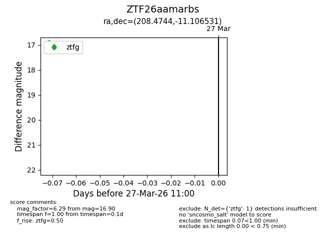
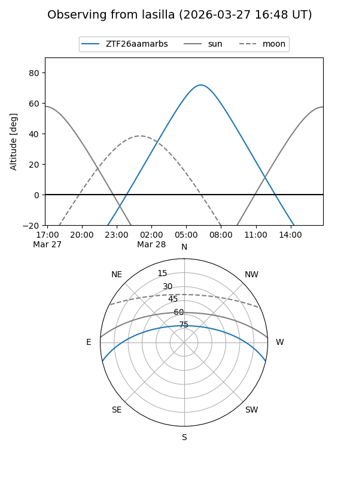
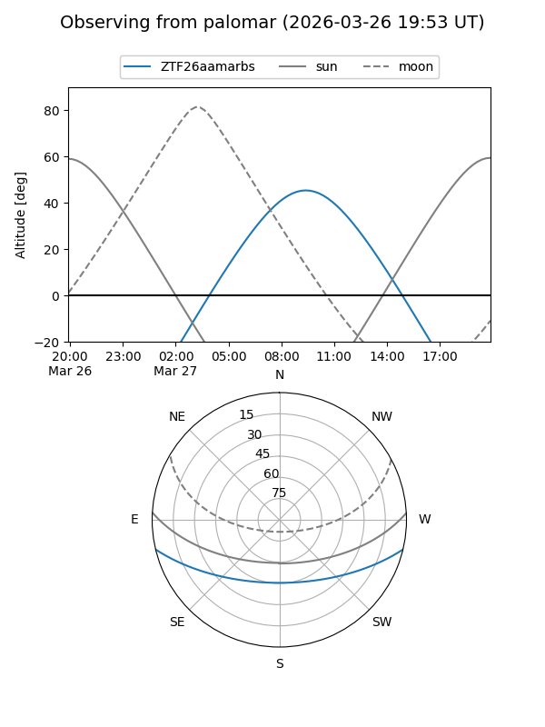

ZTF26aamarbs
Target ZTF26aamarbs at 2026-03-27 11:03
Aliases and brokers:
FINK: link
Lasair: link
ALeRCE: link
alt names
ZTF26aamarbs (ztf,fink_ztf)
Coordinates:
equatorial (ra, dec) = 208.4744,-11.10653
equatorial (HMS+DMS) = 13:53:53.85,-11:06:23.51
galactic (l, b) = (326.6085,+48.87264)
Flags:
Photometry:
last ztfg=16.90
1 ztfg detections
Lightcurve

Visibility


Additional plots